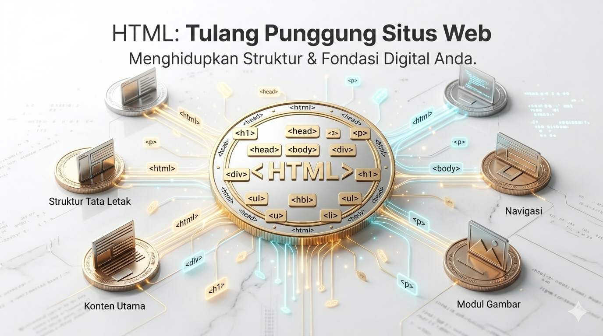

1. Kenalan Sama Tulang Web
HTML (Hypertext Markup Language) itu bukan bahasa pemrograman, Coy! Dia itu bahasa Markup alias kerangka dasar dari semua website di dunia.
Ibarat membangun rumah, HTML adalah batu bata dan tiang betonnya. Kita nyusun teks, masukin gambar, dan bikin tombol itu semua pakai HTML.

2. Kamus Tag Sakti 🪄
Hafalin 4 tag ini, dan lu udah bisa bikin artikel web sederhana:
Judul Utama
Bikin teks lu gede banget. Ada h1 (paling gede) sampai h6 (paling kecil).
Teks Biasa
Dipakai buat nulis deskripsi, artikel, atau curhatan panjang lu.
Pintu Kemana Saja
Buat bikin link yang bisa diklik. Butuh atribut href="link-tujuan" biar jalan.
Tukang Foto
Nampilin gambar. Tag ini jomblo (nggak butuh penutup). Butuh atribut src="nama-foto".
3. Video Bedah Kode
Karena aturan dari YouTube, video ini harus diputar langsung di tab baru. Klik tombol di bawah buat nonton bedah kodenya!
4. Kertas Contekan HTML
Ini kodingan lengkap web biodata pertama kita. Tinggal pencet Copy, lalu Paste di VS Code lu buat dipelajarin.
<!DOCTYPE html>
<html lang="id">
<head>
<title>Biodata BARBARCC</title>
</head>
<body>
<h1>Halo, Gwe Calon Programmer!</h1>
<p>Ini web pertama gwe di kelas BARBARCC.</p>
<!-- Atribut src itu sumber fotonya -->
<img src="link-foto-lu.jpg" width="200">
<ul>
<li>Belajar HTML</li>
<li>Bantai Error</li>
</ul>
</body>
</html>
5. Akses Modul Lengkap (Google Drive)
Klik tombol di bawah buat meluncur ke folder Google Drive. Di sana lu bisa download PDF presentasi materi Pertemuan 2 biar lu makin jago nulis tag HTML.
Buka Folder Modul 2 📂